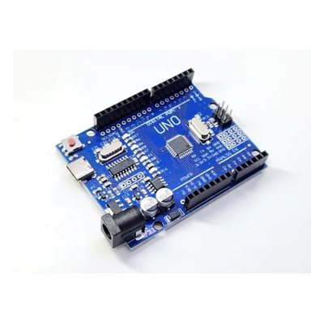
ערכת מכונית אוטונומית יורה לייזר
קורס נוער · סוכות 2026 · כל רכיבי הערכה ליחיד
בקרים + בסיס · 4
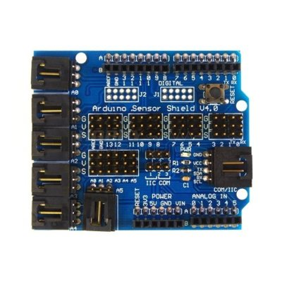
לוח הרחבה לארדואינו
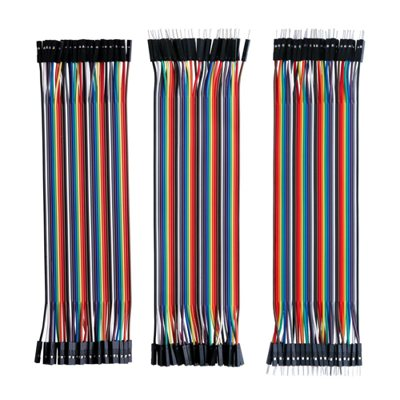
120 חוטים צבעוניים
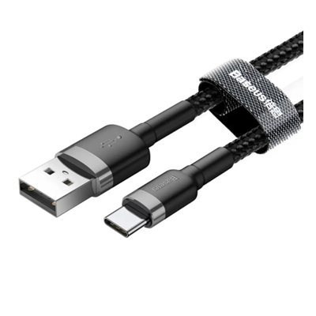
כבל TYPE-C
מומלץ באורך 1 מטר
חיישנים ובקרה · 9
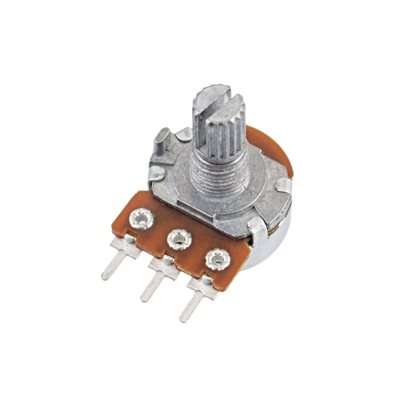
נגד משתנה (פוטנציומטר)
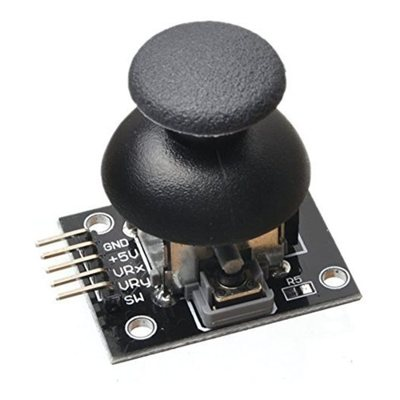
ג'ויסטיק
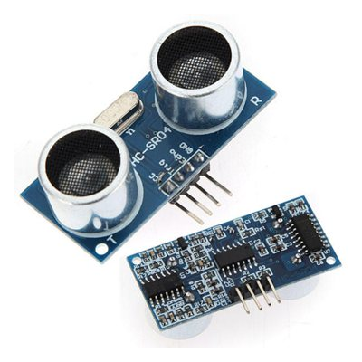
חיישן קרבה אולטרסוני
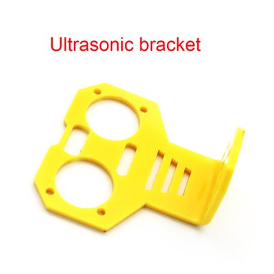
משקפיים לחיישן מרחק
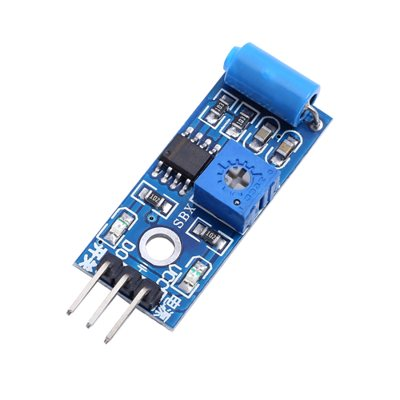
חיישן ויברציה
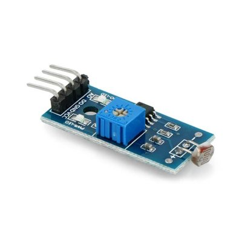
חיישן אור אנלוגי (4 רגליים)
מומלץ שיהיו 4 כאלו
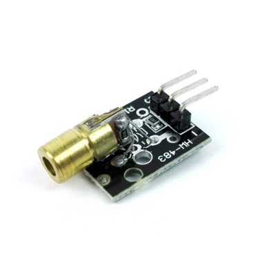
מודול לייזר
עדיף 4 יחידות
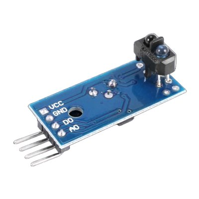
חיישן החזר קו שחור (TCRT5000)
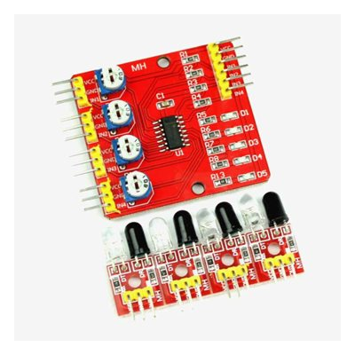
מערך 4 חיישני החזר קו (IR Array)
תצוגה וסאונד · 5
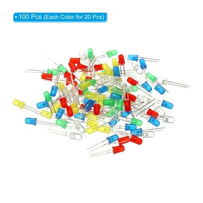
לדים
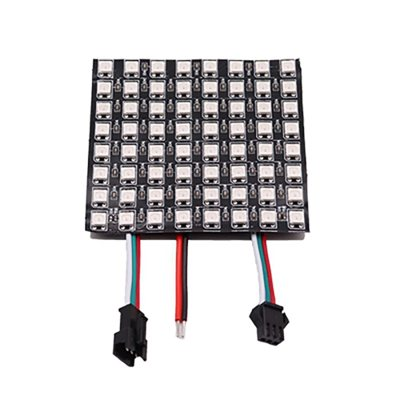
מטריצת לדים צבעונית 8×8
עדיף מולחם מראש עם קבלים
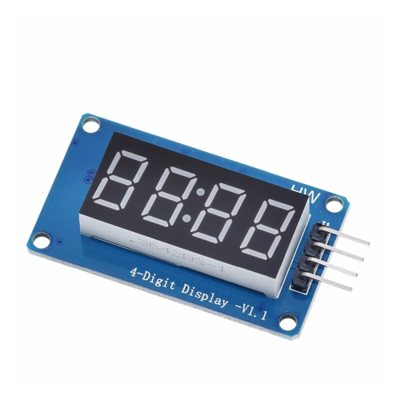
מסך 4 ספרות
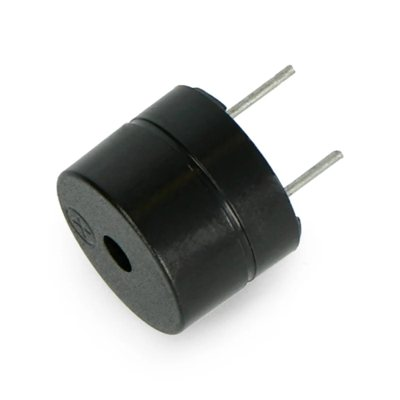
BUZZER (זמזם)
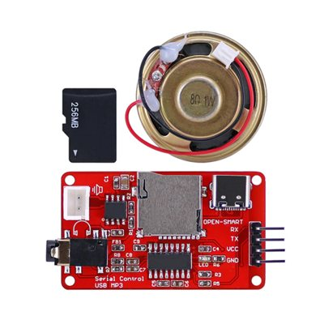
נגן MP3 + כרטיס זיכרון
תקשורת · 3
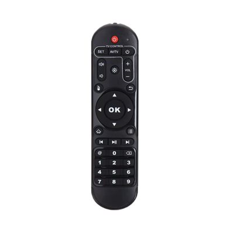
שלט IR אוניברסלי
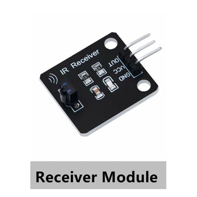
מקלט IR
עדיף דגם זה - יותר טוב
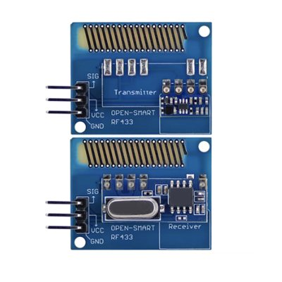
Long Range 433MHz RF Wireless Transceiver Kit
מכונית חכמה + תנועה · 7
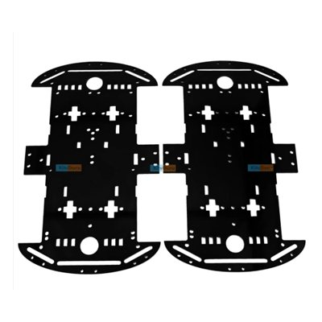
2 שלדות מכונית
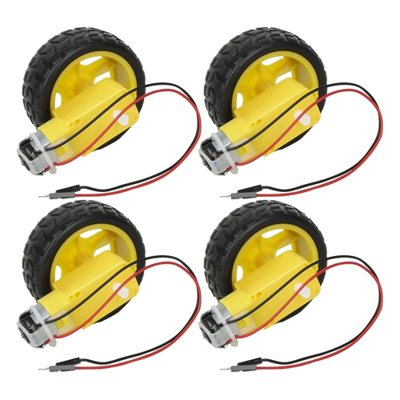
4 מנועים + גלגלים צהובים (מולחם)
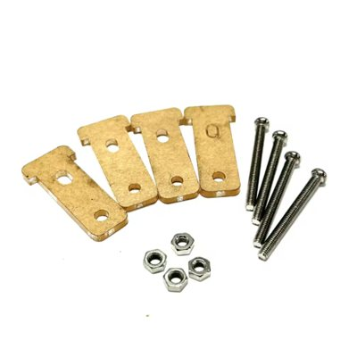
ברגים ותומכי גלגל
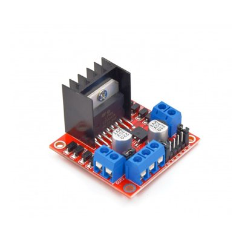
גשר H
⚙️
מנוע מיקרו סרבו
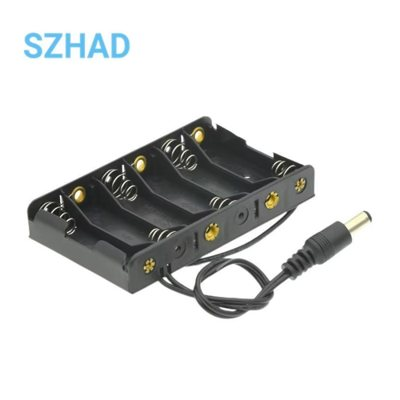
בית סוללה 6×AA
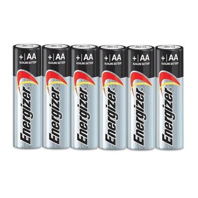